Separable functions
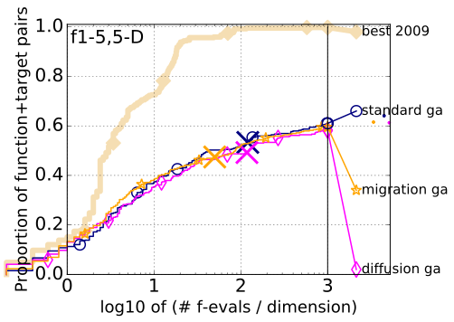Moderate functions
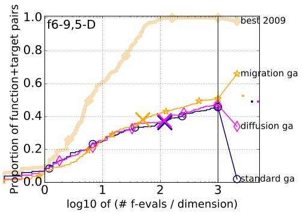Ill-conditioned functions
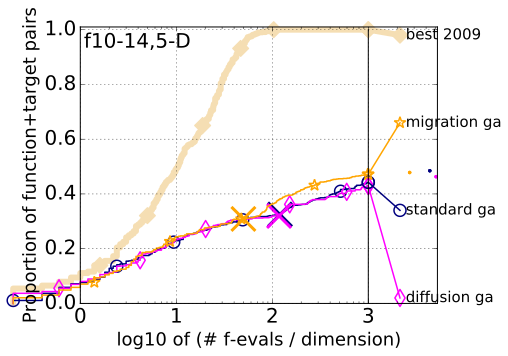Multi-modal functions
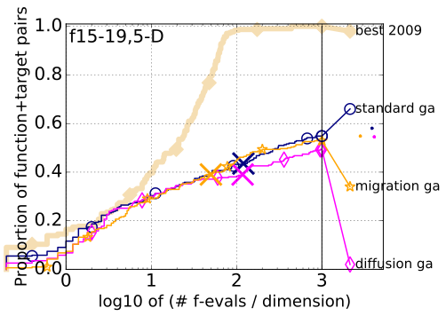Weakly structured multi-modal functions
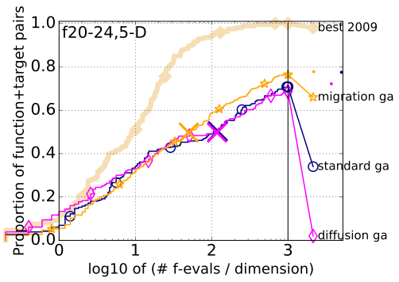All functions
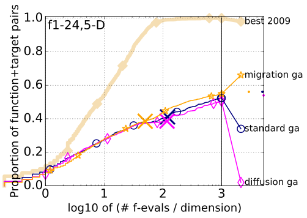 Bootstrapped empirical cumulative distribution of the number of objective function evaluations divided by dimension (FEvals/DIM) for all functions and subgroups in 5-D. The targets are chosen from 10[−8..2] such that the bestGECCO2009 artificial algorithm just not reached them within a given budget of k × DIM, with k ∈ {0.5, 1.2, 3, 10, 50}. The "best 2009" line corresponds to the best ERT observed during BBOB 2009 for each selected target.Separable functions
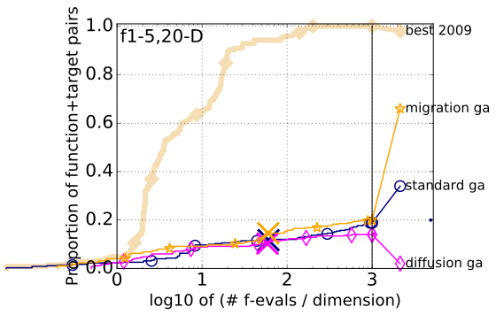Moderate functions
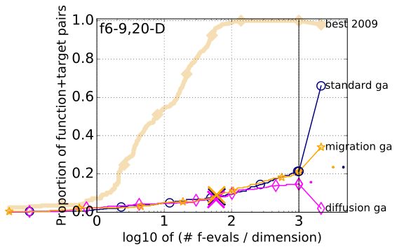Ill-conditioned functions
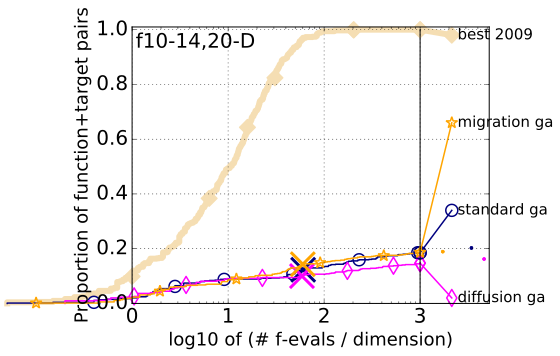Multi-modal functions
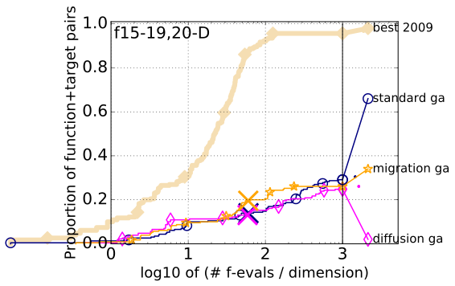Weakly structured multi-modal functions
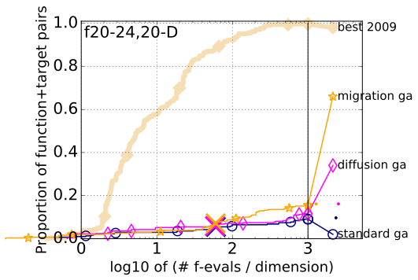All functions
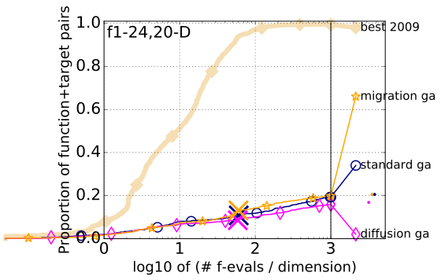 Bootstrapped empirical cumulative distribution of the number of objective function evaluations divided by dimension (FEvals/DIM) for all functions and subgroups in 20-D. The targets are chosen from 10[−8..2] such that the bestGECCO2009 artificial algorithm just not reached them within a given budget of k × DIM, with k ∈ {0.5, 1.2, 3, 10, 50}. The "best 2009" line corresponds to the best ERT observed during BBOB 2009 for each selected target.| #FEs/D f1 |
0.5 2.5e+1:4.8 |
1.2 1.6e+1:7.6 |
3 1.0e-8:12 |
10 1.0e-8:12 |
50 1.0e-8:12 |
#succ 15/15 |
|---|---|---|---|---|---|---|
| standard ga | 2.1 (1) | 3.2 (6) | ∞ | ∞ | ∞601 | 0/15 |
| diffusion ga | 1.9 (2) | 5.3 (5) | ∞ | ∞ | ∞588 | 0/15 |
| migration ga | 1.6 (2) | 2.6 (2) | ∞ | ∞ | ∞250 | 0/15 |
| #FEs/D f2 |
0.5 1.6e+6:2.9 |
1.2 4.0e+5:11 |
3 4.0e+4:15 |
10 6.3e+2:58 |
50 1.0e-8:95 |
#succ 15/15 |
|---|---|---|---|---|---|---|
| standard ga | 2.2 (2) | 1.1 (0.8) | 13 (13) | ∞ | ∞601 | 0/15 |
| diffusion ga | 1.2 (2) | 1.2 (2) | 17 (24) | ∞ | ∞588 | 0/15 |
| migration ga | 2.3 (2) | 1.5 (2) | 15 (13) | ∞ | ∞250 | 0/15 |
| #FEs/D f3 |
0.5 1.6e+2:4.1 |
1.2 1.0e+2:15 |
3 6.3e+1:23 |
10 2.5e+1:73 |
50 1.0e+1:716 |
#succ 15/15 |
|---|---|---|---|---|---|---|
| standard ga | 2.3 (3) | 3.2 (4) | 16 (27) | ∞ | ∞601 | 0/15 |
| diffusion ga | 2.2 (2) | 1.7 (2) | 31 (38) | ∞ | ∞588 | 0/15 |
| migration ga | 2.5 (3) | 2.0 (1) | 10 (12) | ∞ | ∞250 | 0/15 |
| #FEs/D f4 |
0.5 2.5e+2:2.6 |
1.2 1.6e+2:10 |
3 1.0e+2:19 |
10 4.0e+1:65 |
50 1.6e+1:434 |
#succ 15/15 |
|---|---|---|---|---|---|---|
| standard ga | 3.0 (3) | 2.6 (3) | 16 (35) | ∞ | ∞601 | 0/15 |
| diffusion ga | 3.0 (2) | 2.2 (0.9) | 10 (9) | 131 (83) | ∞588 | 0/15 |
| migration ga | 2.8 (2) | 1.8 (0.8) | 4.9 (3) | ∞ | ∞250 | 0/15 |
| #FEs/D f5 |
0.5 6.3e+1:4.0 |
1.2 4.0e+1:10 |
3 1.0e-8:10 |
10 1.0e-8:10 |
50 1.0e-8:10 |
#succ 15/15 |
|---|---|---|---|---|---|---|
| standard ga | 2.0 (1) | 6.1 (7) | ∞ | ∞ | ∞601 | 0/15 |
| diffusion ga | 1.9 (2) | 4.2 (3) | ∞ | ∞ | ∞588 | 0/15 |
| migration ga | 2.0 (1) | 3.1 (3) | ∞ | ∞ | ∞257 | 0/15 |
| #FEs/D f6 |
0.5 1.0e+5:3.0 |
1.2 2.5e+4:8.4 |
3 1.0e+2:16 |
10 2.5e+1:54 |
50 2.5e-1:254 |
#succ 15/15 |
|---|---|---|---|---|---|---|
| standard ga | 1.7 (2) | 2.0 (5) | 12 (35) | ∞ | ∞601 | 0/15 |
| diffusion ga | 2.7 (13) | 3.7 (0.5) | 10 (6) | 24 (38) | ∞588 | 0/15 |
| migration ga | 3.5 (4) | 4.2 (8) | 6.0 (10) | 36 (40) | ∞250 | 0/15 |
| #FEs/D f7 |
0.5 1.6e+2:4.2 |
1.2 1.0e+2:6.2 |
3 2.5e+1:20 |
10 4.0e+0:54 |
50 1.0e+0:324 |
#succ 15/15 |
|---|---|---|---|---|---|---|
| standard ga | 1.7 (1) | 1.5 (1) | 6.8 (4) | ∞ | ∞601 | 0/15 |
| diffusion ga | 1.5 (1) | 2.5 (4) | 25 (16) | ∞ | ∞588 | 0/15 |
| migration ga | 2.2 (2) | 2.8 (3) | 5.8 (8) | 38 (78) | ∞250 | 0/15 |
| #FEs/D f8 |
0.5 1.0e+4:4.6 |
1.2 6.3e+3:6.8 |
3 1.0e+3:18 |
10 6.3e+1:54 |
50 1.6e+0:258 |
#succ 15/15 |
|---|---|---|---|---|---|---|
| standard ga | 2.9 (3) | 2.7 (3) | 16 (21) | 158 (251) | ∞601 | 0/15 |
| diffusion ga | 1.4 (2) | 2.2 (2) | 20 (26) | ∞ | ∞588 | 0/15 |
| migration ga | 4.2 (6) | 3.4 (3) | 10 (14) | ∞ | ∞250 | 0/15 |
| #FEs/D f9 |
0.5 2.5e+1:20 |
1.2 1.6e+1:26 |
3 1.0e+1:35 |
10 4.0e+0:62 |
50 1.6e-2:256 |
#succ 15/15 |
|---|---|---|---|---|---|---|
| standard ga | ∞ | ∞ | ∞ | ∞ | ∞601 | 0/15 |
| diffusion ga | 217 (377) | ∞ | ∞ | ∞ | ∞588 | 0/15 |
| migration ga | ∞ | ∞ | ∞ | ∞ | ∞259 | 0/15 |
| #FEs/D f10 |
0.5 2.5e+6:2.9 |
1.2 6.3e+5:7.0 |
3 2.5e+5:17 |
10 6.3e+3:54 |
50 2.5e+1:297 |
#succ 15/15 |
|---|---|---|---|---|---|---|
| standard ga | 1.8 (1) | 1.7 (3) | 2.2 (1.0) | 49 (53) | ∞601 | 0/15 |
| diffusion ga | 2.0 (3) | 2.4 (4) | 1.8 (2) | ∞ | ∞588 | 0/15 |
| migration ga | 1.6 (1) | 2.0 (0.6) | 2.0 (3) | 14 (9) | ∞250 | 0/15 |
| #FEs/D f11 |
0.5 1.0e+6:3.0 |
1.2 6.3e+4:6.2 |
3 6.3e+2:16 |
10 6.3e+1:74 |
50 6.3e-1:298 |
#succ 15/15 |
|---|---|---|---|---|---|---|
| standard ga | 2.3 (2) | 4.7 (7) | 15 (19) | 54 (57) | ∞601 | 0/15 |
| diffusion ga | 2.5 (4) | 3.3 (2) | 11 (15) | 32 (40) | ∞588 | 0/15 |
| migration ga | 2.4 (2) | 7.2 (8) | 15 (14) | 12 (17) | ∞290 | 0/15 |
| #FEs/D f12 |
0.5 4.0e+7:3.6 |
1.2 1.6e+7:7.6 |
3 4.0e+6:19 |
10 1.6e+4:52 |
50 1.0e+0:268 |
#succ 15/15 |
|---|---|---|---|---|---|---|
| standard ga | 1.5 (1) | 3.3 (6) | 21 (49) | ∞ | ∞601 | 0/15 |
| diffusion ga | 0.78 (1.0) | 1.8 (3) | 24 (32) | ∞ | ∞588 | 0/15 |
| migration ga | 0.61 (0.5) | 2.8 (2) | 11 (13) | ∞ | ∞250 | 0/15 |
| #FEs/D f13 |
0.5 1.0e+3:2.8 |
1.2 6.3e+2:8.4 |
3 4.0e+2:17 |
10 6.3e+1:52 |
50 6.3e-2:264 |
#succ 15/15 |
|---|---|---|---|---|---|---|
| standard ga | 3.2 (5) | 4.4 (4) | 11 (54) | ∞ | ∞601 | 0/15 |
| diffusion ga | 2.3 (3) | 5.1 (3) | 15 (2) | ∞ | ∞588 | 0/15 |
| migration ga | 1.6 (2) | 4.2 (2) | 7.7 (10) | ∞ | ∞250 | 0/15 |
| #FEs/D f14 |
0.5 1.6e+1:3.0 |
1.2 1.0e+1:10 |
3 6.3e+0:15 |
10 2.5e-1:53 |
50 1.0e-5:251 |
#succ 15/15 |
|---|---|---|---|---|---|---|
| standard ga | 1.8 (2) | 0.71 (0.3) | 3.7 (5) | ∞ | ∞601 | 0/15 |
| diffusion ga | 2.9 (5) | 1.8 (2) | 2.1 (2) | 159 (143) | ∞588 | 0/15 |
| migration ga | 3.4 (3) | 1.8 (2) | 2.8 (3) | ∞ | ∞250 | 0/15 |
| #FEs/D f15 |
0.5 1.6e+2:3.0 |
1.2 1.0e+2:13 |
3 6.3e+1:24 |
10 4.0e+1:55 |
50 1.6e+1:289 |
#succ 5/5 |
|---|---|---|---|---|---|---|
| standard ga | 2.2 (2) | 1.4 (2) | 14 (22) | 71 (92) | ∞601 | 0/15 |
| diffusion ga | 2.9 (2) | 2.3 (1) | 29 (53) | ∞ | ∞588 | 0/15 |
| migration ga | 5.0 (8) | 2.5 (1) | 12 (12) | 40 (30) | ∞250 | 0/15 |
| #FEs/D f16 |
0.5 4.0e+1:4.8 |
1.2 2.5e+1:16 |
3 1.6e+1:46 |
10 1.0e+1:120 |
50 4.0e+0:334 |
#succ 15/15 |
|---|---|---|---|---|---|---|
| standard ga | 1.4 (0.9) | 1.1 (3) | 2.3 (2) | 4.1 (5) | 5.9 (2) | 4/15 |
| diffusion ga | 1.3 (1) | 1.3 (0.3) | 1.9 (1) | 4.4 (6) | 25 (46) | 1/15 |
| migration ga | 1.2 (2) | 1.7 (0.7) | 1.1 (1) | 2.0 (2) | ∞250 | 0/15 |
| #FEs/D f17 |
0.5 1.0e+1:5.2 |
1.2 6.3e+0:26 |
3 4.0e+0:57 |
10 2.5e+0:110 |
50 6.3e-1:412 |
#succ 15/15 |
|---|---|---|---|---|---|---|
| standard ga | 3.8 (5) | 2.0 (2) | 12 (19) | 77 (72) | ∞601 | 0/15 |
| diffusion ga | 4.7 (5) | 7.3 (7) | 43 (18) | ∞ | ∞588 | 0/15 |
| migration ga | 3.2 (3) | 4.4 (7) | 7.4 (10) | ∞ | ∞250 | 0/15 |
| #FEs/D f18 |
0.5 6.3e+1:3.4 |
1.2 4.0e+1:7.2 |
3 2.5e+1:20 |
10 1.6e+1:58 |
50 1.6e+0:318 |
#succ 15/15 |
|---|---|---|---|---|---|---|
| standard ga | 1.4 (1) | 1.8 (1) | 3.8 (4) | 9.5 (9) | ∞601 | 0/15 |
| diffusion ga | 1.7 (2) | 2.1 (0.9) | 2.7 (2) | 14 (20) | ∞588 | 0/15 |
| migration ga | 1.9 (1) | 2.7 (2) | 4.6 (11) | 7.6 (9) | ∞250 | 0/15 |
| #FEs/D f19 |
0.5 1.6e-1:172 |
1.2 1.0e-1:242 |
3 6.3e-2:675 |
10 4.0e-2:3078 |
50 2.5e-2:4946 |
#succ 15/15 |
|---|---|---|---|---|---|---|
| standard ga | ∞ | ∞ | ∞ | ∞ | ∞601 | 0/15 |
| diffusion ga | ∞ | ∞ | ∞ | ∞ | ∞588 | 0/15 |
| migration ga | ∞ | ∞ | ∞ | ∞ | ∞250 | 0/15 |
| #FEs/D f20 |
0.5 6.3e+3:5.1 |
1.2 4.0e+3:8.4 |
3 4.0e+1:15 |
10 2.5e+0:69 |
50 1.0e+0:851 |
#succ 15/15 |
|---|---|---|---|---|---|---|
| standard ga | 2.5 (2) | 2.6 (4) | 47 (29) | 129 (98) | ∞601 | 0/15 |
| diffusion ga | 1.9 (2) | 2.7 (2) | 54 (39) | ∞ | ∞588 | 0/15 |
| migration ga | 1.9 (1) | 3.1 (2) | 25 (40) | ∞ | ∞250 | 0/15 |
| #FEs/D f21 |
0.5 4.0e+1:3.9 |
1.2 2.5e+1:11 |
3 1.6e+1:31 |
10 6.3e+0:73 |
50 1.6e+0:347 |
#succ 5/5 |
|---|---|---|---|---|---|---|
| standard ga | 2.3 (4) | 1.9 (0.9) | 1.4 (2) | 18 (10) | ∞601 | 0/15 |
| diffusion ga | 1.6 (1) | 1.6 (0.8) | 4.7 (10) | 34 (65) | ∞588 | 0/15 |
| migration ga | 0.98 (0.3) | 1.6 (2) | 2.8 (2) | 10 (12) | ∞250 | 0/15 |
| #FEs/D f22 |
0.5 6.3e+1:3.6 |
1.2 4.0e+1:15 |
3 2.5e+1:32 |
10 1.0e+1:71 |
50 1.6e+0:341 |
#succ 5/5 |
|---|---|---|---|---|---|---|
| standard ga | 2.1 (2) | 1.9 (2) | 2.7 (5) | 8.1 (12) | ∞601 | 0/15 |
| diffusion ga | 1.8 (3) | 0.98 (0.3) | 2.7 (5) | 8.3 (13) | ∞588 | 0/15 |
| migration ga | 1.9 (2) | 1.5 (1) | 3.3 (6) | 4.0 (3) | ∞250 | 0/15 |
| #FEs/D f23 |
0.5 1.0e+1:3.0 |
1.2 6.3e+0:9.0 |
3 4.0e+0:33 |
10 2.5e+0:84 |
50 1.0e+0:518 |
#succ 15/15 |
|---|---|---|---|---|---|---|
| standard ga | 1.5 (1) | 2.3 (2) | 3.2 (4) | 12 (9) | ∞601 | 0/15 |
| diffusion ga | 1.8 (2) | 2.3 (2) | 3.6 (1) | 12 (12) | ∞588 | 0/15 |
| migration ga | 1.8 (2) | 2.8 (1) | 2.5 (2) | 7.1 (7) | ∞250 | 0/15 |
| #FEs/D f24 |
0.5 6.3e+1:15 |
1.2 4.0e+1:37 |
3 4.0e+1:37 |
10 2.5e+1:118 |
50 1.6e+1:692 |
#succ 15/15 |
|---|---|---|---|---|---|---|
| standard ga | 6.6 (12) | 50 (36) | 50 (23) | ∞ | ∞601 | 0/15 |
| diffusion ga | 6.1 (3) | 37 (45) | 37 (42) | ∞ | ∞588 | 0/15 |
| migration ga | 7.9 (6) | 24 (24) | 24 (26) | ∞ | ∞250 | 0/15 |
| #FEs/D f1 |
0.5 6.3e+1:24 |
1.2 4.0e+1:42 |
3 1.0e-8:43 |
10 1.0e-8:43 |
50 1.0e-8:43 |
#succ 15/15 |
|---|---|---|---|---|---|---|
| standard ga | 746 (250) | ∞ | ∞ | ∞ | ∞1210 | 0/15 |
| diffusion ga | ∞ | ∞ | ∞ | ∞ | ∞1176 | 0/15 |
| migration ga | 179 (163) | ∞ | ∞ | ∞ | ∞1200 | 0/15 |
| #FEs/D f2 |
0.5 4.0e+6:29 |
1.2 2.5e+6:42 |
3 1.0e+5:65 |
10 1.0e+4:207 |
50 1.0e-8:412 |
#succ 15/15 |
|---|---|---|---|---|---|---|
| standard ga | 1.6 (2) | 5.1 (7) | ∞ | ∞ | ∞1210 | 0/15 |
| diffusion ga | 2.8 (0.8) | 8.5 (7) | ∞ | ∞ | ∞1176 | 0/15 |
| migration ga | 0.89 (1) | 0.93 (1) | ∞ | ∞ | ∞1200 | 0/15 |
| #FEs/D f3 |
0.5 6.3e+2:33 |
1.2 4.0e+2:44 |
3 1.6e+2:109 |
10 1.0e+2:255 |
50 2.5e+1:3277 |
#succ 15/15 |
|---|---|---|---|---|---|---|
| standard ga | 17 (12) | ∞ | ∞ | ∞ | ∞1210 | 0/15 |
| diffusion ga | 38 (57) | ∞ | ∞ | ∞ | ∞1176 | 0/15 |
| migration ga | 13 (15) | ∞ | ∞ | ∞ | ∞1200 | 0/15 |
| #FEs/D f4 |
0.5 6.3e+2:22 |
1.2 4.0e+2:91 |
3 2.5e+2:250 |
10 1.6e+2:332 |
50 6.3e+1:1927 |
#succ 15/15 |
|---|---|---|---|---|---|---|
| standard ga | 253 (252) | ∞ | ∞ | ∞ | ∞1210 | 0/15 |
| diffusion ga | 248 (190) | ∞ | ∞ | ∞ | ∞1176 | 0/15 |
| migration ga | 75 (55) | ∞ | ∞ | ∞ | ∞1200 | 0/15 |
| #FEs/D f5 |
0.5 2.5e+2:19 |
1.2 1.6e+2:34 |
3 1.0e-8:41 |
10 1.0e-8:41 |
50 1.0e-8:41 |
#succ 15/15 |
|---|---|---|---|---|---|---|
| standard ga | 9.4 (12) | 251 (475) | ∞ | ∞ | ∞1210 | 0/15 |
| diffusion ga | 12 (19) | ∞ | ∞ | ∞ | ∞1176 | 0/15 |
| migration ga | 7.6 (14) | 125 (147) | ∞ | ∞ | ∞1200 | 0/15 |
| #FEs/D f6 |
0.5 2.5e+5:16 |
1.2 6.3e+4:43 |
3 1.6e+4:62 |
10 1.6e+2:353 |
50 1.6e+1:1078 |
#succ 15/15 |
|---|---|---|---|---|---|---|
| standard ga | 38 (37) | 399 (532) | ∞ | ∞ | ∞1210 | 0/15 |
| diffusion ga | 47 (39) | 189 (91) | ∞ | ∞ | ∞1176 | 0/15 |
| migration ga | 32 (43) | 75 (84) | 287 (258) | ∞ | ∞1200 | 0/15 |
| #FEs/D f7 |
0.5 1.0e+3:11 |
1.2 4.0e+2:39 |
3 2.5e+2:74 |
10 6.3e+1:319 |
50 1.0e+1:1351 |
#succ 15/15 |
|---|---|---|---|---|---|---|
| standard ga | 1.8 (0.4) | 45 (48) | 54 (30) | ∞ | ∞1210 | 0/15 |
| diffusion ga | 3.1 (8) | 70 (119) | ∞ | ∞ | ∞1176 | 0/15 |
| migration ga | 7.5 (1) | 36 (23) | ∞ | ∞ | ∞1200 | 0/15 |
| #FEs/D f8 |
0.5 4.0e+4:19 |
1.2 2.5e+4:35 |
3 4.0e+3:67 |
10 2.5e+2:231 |
50 1.6e+1:1470 |
#succ 15/15 |
|---|---|---|---|---|---|---|
| standard ga | 313 (328) | ∞ | ∞ | ∞ | ∞1210 | 0/15 |
| diffusion ga | 413 (235) | ∞ | ∞ | ∞ | ∞1176 | 0/15 |
| migration ga | 473 (221) | ∞ | ∞ | ∞ | ∞1200 | 0/15 |
| #FEs/D f9 |
0.5 1.0e+2:357 |
1.2 6.3e+1:560 |
3 4.0e+1:684 |
10 2.5e+1:756 |
50 1.0e+1:1716 |
#succ 15/15 |
|---|---|---|---|---|---|---|
| standard ga | ∞ | ∞ | ∞ | ∞ | ∞1210 | 0/15 |
| diffusion ga | ∞ | ∞ | ∞ | ∞ | ∞1176 | 0/15 |
| migration ga | ∞ | ∞ | ∞ | ∞ | ∞1200 | 0/15 |
| #FEs/D f10 |
0.5 1.6e+6:15 |
1.2 1.0e+6:27 |
3 4.0e+5:70 |
10 6.3e+4:231 |
50 4.0e+3:1015 |
#succ 15/15 |
|---|---|---|---|---|---|---|
| standard ga | 49 (61) | 209 (254) | ∞ | ∞ | ∞1210 | 0/15 |
| diffusion ga | 106 (177) | 298 (708) | ∞ | ∞ | ∞1176 | 0/15 |
| migration ga | 36 (32) | 54 (99) | ∞ | ∞ | ∞1200 | 0/15 |
| #FEs/D f11 |
0.5 4.0e+4:11 |
1.2 2.5e+3:27 |
3 1.6e+2:313 |
10 1.0e+2:481 |
50 1.0e+1:1002 |
#succ 15/15 |
|---|---|---|---|---|---|---|
| standard ga | 1.8 (1.0) | 5.3 (8) | ∞ | ∞ | ∞1210 | 0/15 |
| diffusion ga | 4.0 (3) | 8.0 (5) | ∞ | ∞ | ∞1176 | 0/15 |
| migration ga | 3.0 (2) | 3.2 (3) | 28 (44) | ∞ | ∞1200 | 0/15 |
| #FEs/D f12 |
0.5 1.0e+8:23 |
1.2 6.3e+7:39 |
3 2.5e+7:76 |
10 4.0e+6:209 |
50 1.0e+1:1042 |
#succ 15/15 |
|---|---|---|---|---|---|---|
| standard ga | 136 (130) | 460 (514) | ∞ | ∞ | ∞1210 | 0/15 |
| diffusion ga | 234 (243) | 446 (1067) | ∞ | ∞ | ∞1176 | 0/15 |
| migration ga | 138 (251) | 215 (358) | ∞ | ∞ | ∞1200 | 0/15 |
| #FEs/D f13 |
0.5 1.6e+3:28 |
1.2 1.0e+3:64 |
3 6.3e+2:79 |
10 4.0e+1:211 |
50 2.5e+0:1724 |
#succ 15/15 |
|---|---|---|---|---|---|---|
| standard ga | 188 (601) | ∞ | ∞ | ∞ | ∞1210 | 0/15 |
| diffusion ga | ∞ | ∞ | ∞ | ∞ | ∞1176 | 0/15 |
| migration ga | 92 (128) | ∞ | ∞ | ∞ | ∞1200 | 0/15 |
| #FEs/D f14 |
0.5 2.5e+1:15 |
1.2 1.6e+1:42 |
3 1.0e+1:75 |
10 1.6e+0:219 |
50 6.3e-4:1106 |
#succ 15/15 |
|---|---|---|---|---|---|---|
| standard ga | 209 (77) | 405 (585) | ∞ | ∞ | ∞1210 | 0/15 |
| diffusion ga | 1128 (906) | ∞ | ∞ | ∞ | ∞1176 | 0/15 |
| migration ga | 71 (87) | ∞ | ∞ | ∞ | ∞1200 | 0/15 |
| #FEs/D f15 |
0.5 6.3e+2:15 |
1.2 4.0e+2:67 |
3 2.5e+2:292 |
10 1.6e+2:846 |
50 1.0e+2:1671 |
#succ 15/15 |
|---|---|---|---|---|---|---|
| standard ga | 76 (74) | 265 (175) | ∞ | ∞ | ∞1210 | 0/15 |
| diffusion ga | 137 (212) | ∞ | ∞ | ∞ | ∞1176 | 0/15 |
| migration ga | 34 (28) | ∞ | ∞ | ∞ | ∞1200 | 0/15 |
| #FEs/D f16 |
0.5 4.0e+1:26 |
1.2 2.5e+1:127 |
3 1.6e+1:540 |
10 1.6e+1:540 |
50 1.0e+1:1384 |
#succ 15/15 |
|---|---|---|---|---|---|---|
| standard ga | 3.9 (2) | 41 (26) | ∞ | ∞ | ∞1210 | 0/15 |
| diffusion ga | 6.4 (3) | 136 (179) | ∞ | ∞ | ∞1176 | 0/15 |
| migration ga | 2.5 (3) | 12 (10) | ∞ | ∞ | ∞1200 | 0/15 |
| #FEs/D f17 |
0.5 1.6e+1:11 |
1.2 1.0e+1:63 |
3 6.3e+0:305 |
10 4.0e+0:468 |
50 1.0e+0:1030 |
#succ 15/15 |
|---|---|---|---|---|---|---|
| standard ga | 18 (42) | 133 (123) | ∞ | ∞ | ∞1210 | 0/15 |
| diffusion ga | 18 (50) | 57 (41) | ∞ | ∞ | ∞1176 | 0/15 |
| migration ga | 23 (41) | 26 (16) | ∞ | ∞ | ∞1200 | 0/15 |
| #FEs/D f18 |
0.5 4.0e+1:116 |
1.2 2.5e+1:252 |
3 1.6e+1:430 |
10 1.0e+1:621 |
50 4.0e+0:1090 |
#succ 15/15 |
|---|---|---|---|---|---|---|
| standard ga | 21 (18) | ∞ | ∞ | ∞ | ∞1210 | 0/15 |
| diffusion ga | 73 (124) | ∞ | ∞ | ∞ | ∞1176 | 0/15 |
| migration ga | 12 (14) | ∞ | ∞ | ∞ | ∞1200 | 0/15 |
| #FEs/D f19 |
0.5 1.6e-1:2.5e5 |
1.2 1.0e-1:3.4e5 |
3 6.3e-2:3.4e5 |
10 4.0e-2:3.4e5 |
50 2.5e-2:3.4e5 |
#succ 3/15 |
|---|---|---|---|---|---|---|
| standard ga | ∞ | ∞ | ∞ | ∞ | ∞1210 | 0/15 |
| diffusion ga | ∞ | ∞ | ∞ | ∞ | ∞1176 | 0/15 |
| migration ga | ∞ | ∞ | ∞ | ∞ | ∞1200 | 0/15 |
| #FEs/D f20 |
0.5 1.6e+4:38 |
1.2 1.0e+4:42 |
3 2.5e+2:62 |
10 2.5e+0:250 |
50 1.6e+0:2536 |
#succ 15/15 |
|---|---|---|---|---|---|---|
| standard ga | 466 (331) | ∞ | ∞ | ∞ | ∞1210 | 0/15 |
| diffusion ga | 429 (329) | ∞ | ∞ | ∞ | ∞1176 | 0/15 |
| migration ga | 103 (126) | 410 (968) | ∞ | ∞ | ∞1200 | 0/15 |
| #FEs/D f21 |
0.5 6.3e+1:36 |
1.2 4.0e+1:77 |
3 4.0e+1:77 |
10 1.6e+1:456 |
50 4.0e+0:1094 |
#succ 15/15 |
|---|---|---|---|---|---|---|
| standard ga | ∞ | ∞ | ∞ | ∞ | ∞1210 | 0/15 |
| diffusion ga | 461 (624) | ∞ | ∞ | ∞ | ∞1176 | 0/15 |
| migration ga | 121 (142) | ∞ | ∞ | ∞ | ∞1200 | 0/15 |
| #FEs/D f22 |
0.5 6.3e+1:45 |
1.2 4.0e+1:68 |
3 4.0e+1:68 |
10 1.6e+1:231 |
50 6.3e+0:1219 |
#succ 15/15 |
|---|---|---|---|---|---|---|
| standard ga | ∞ | ∞ | ∞ | ∞ | ∞1210 | 0/15 |
| diffusion ga | ∞ | ∞ | ∞ | ∞ | ∞1176 | 0/15 |
| migration ga | ∞ | ∞ | ∞ | ∞ | ∞1200 | 0/15 |
| #FEs/D f23 |
0.5 6.3e+0:29 |
1.2 4.0e+0:118 |
3 2.5e+0:306 |
10 2.5e+0:306 |
50 1.0e+0:1614 |
#succ 15/15 |
|---|---|---|---|---|---|---|
| standard ga | 1.8 (1) | 12 (18) | ∞ | ∞ | ∞1210 | 0/15 |
| diffusion ga | 1.7 (1) | 11 (14) | 27 (20) | 27 (26) | ∞1176 | 0/15 |
| migration ga | 1.6 (4) | 7.3 (5) | ∞ | ∞ | ∞1200 | 0/15 |
| #FEs/D f24 |
0.5 2.5e+2:208 |
1.2 1.6e+2:918 |
3 1.0e+2:6628 |
10 6.3e+1:9885 |
50 4.0e+1:31629 |
#succ 15/15 |
|---|---|---|---|---|---|---|
| standard ga | ∞ | ∞ | ∞ | ∞ | ∞1210 | 0/15 |
| diffusion ga | ∞ | ∞ | ∞ | ∞ | ∞1176 | 0/15 |
| migration ga | ∞ | ∞ | ∞ | ∞ | ∞1200 | 0/15 |